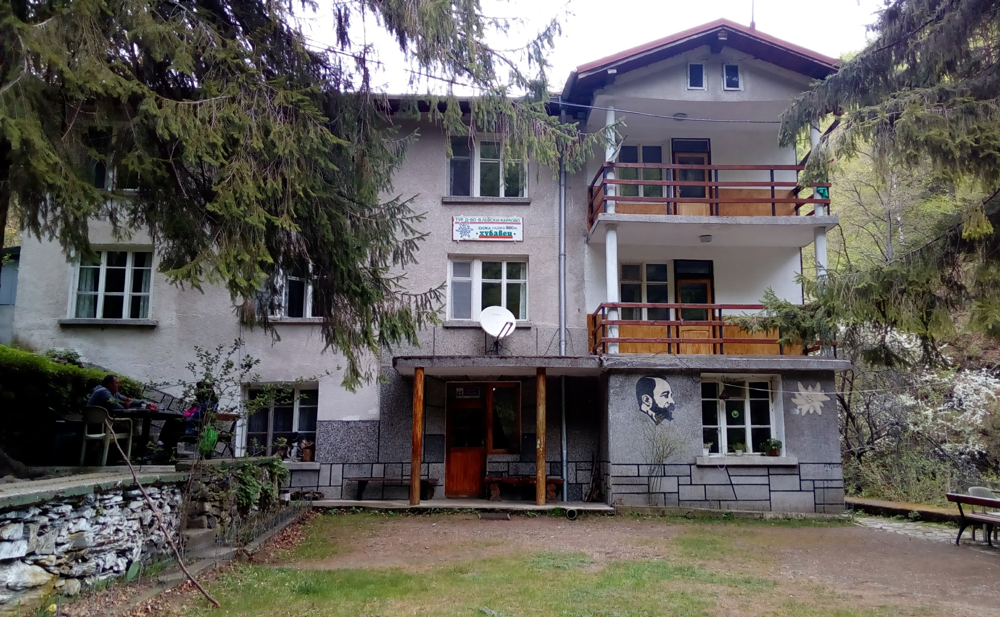

Природа
Пещера Снежанка

Снежанка е една от най-красивите пещери в България. Наричана е още „Перлата на Родопите” и е включена в списъка на 100-те национални туристически обекта. Обявена е за природна забележителност със заповед No.512 от 14.03.1961 г. В своите само 145 метра дължина тя е събрала всички форми на пещерни образувания. Намира се на 5 км oт град Пещера в посока към гр. Батак. Пещерата е образувана от Новомахленската река. Намерените в нея артефакти сочат, че около 600 г.пр.н.е. е била обитавана от древните траки. По-късно е забравена, за да бъде открита отново през 1961 година от туристи.
Хижа "Хубавец"
Най-близката хижа до Карлово е „Хубавец“. Тя се намира на 950 м. надморска височина. Построена е през 1977 г. и същата година е пусната в действие. Хижата разполага с 60 места. Има барче и туристическа столова. Разстоянието от Карлово до „Хубавец“ е около два часа. От нея тръгват пътеки за хижите „Амбарица“, „Балкански рози“, „Васил Левски“, „Рай“, за връх „Левски“ при Амбарица, за връх „Големия купен“ и за връх „Ботев“. Пътят и за трите хижи „Хубавец“, „Балкански рози“ и „Левски“ се вие край „Стара река“.